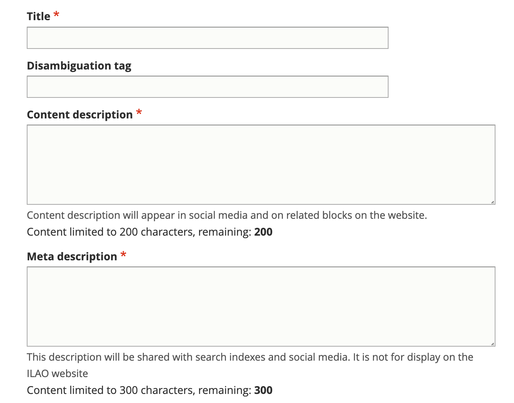
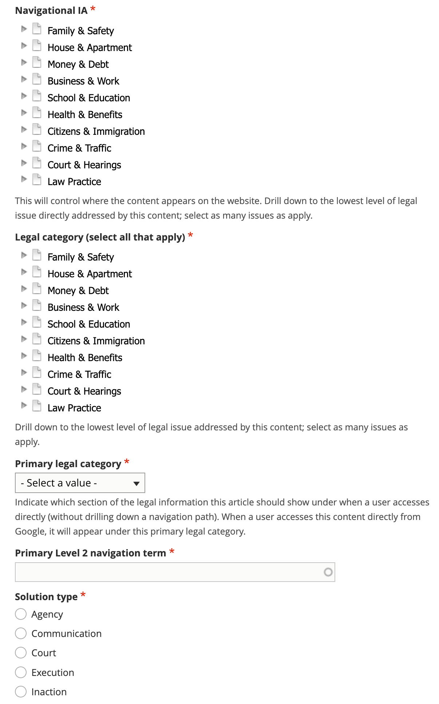
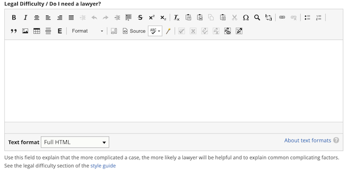
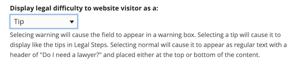
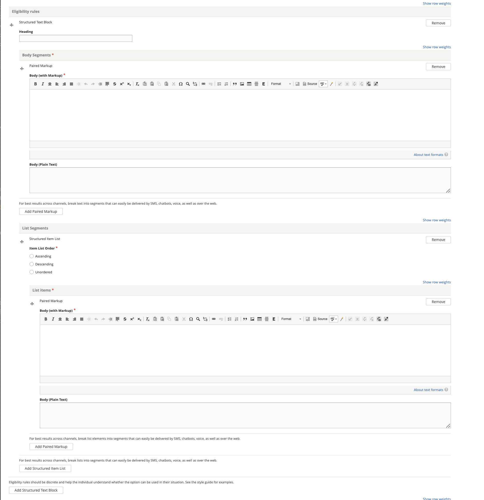

Creating a Legal Option¶
A legal option (solution) is tied to one or more legal problems (see Creating DIY Legal Solution). It provides a framework for when and why a person may want to pursue a specific option. It also includes the step-by-step instructions for the process to complete the option; there may be more than one way to implement an option and multiple sets of instructions are supported.
Create the core solution information¶
Add a title. The title should match our standard title style for process-oriented legal content.
Add a disambiguation tag, if applicable, to identify this solution from other similarly titled solutions. For example, if the content title is “Participate in the court case” the disambiguation tag might be “Eviction” or “Foreclosure” to distinguish between the two.
Add a meta description. This is the description that will be used in social media, search indexes, and in any API. This should be limited to 300 characters.
See the style guide for standards.
Categorize the solution¶
Tag the legal problem to one or more navigational IA tags. This is used to manage the drill down.
Tag the legal problem to one or more legal issues. This is used to associate with Get Legal Help tools.
Select the primary legal category. This is used to keep the information organized when it is tagged to multiple primary categories (for example, we may tag a criminal records issue to Business & Work and Crime & Traffic).
Select the primary level 2 navigation term. This is used to help with breadcrumbs, reporting, and Guided Navigation. This single term comes from the navigational IA taxonomy.
Define the solution type. A solution type are defined by our solution types taxonomy.
Add legal difficulty¶
The legal difficulty section can be used to help individuals understand when they really should have legal help. See examples in the Content style guide. The purpose of this field is to ensure consistency in how this information is provided to individuals; in many cases, while a lawyer would be the BEST option, it is not feasible for the individual.
Warning
Do not add additional “You might need a lawyer” language within structured content.
This is optional. For easy tasks (such as applying for a drivers license), this would likely not be completed.
Different display options are provided to allow the content managers to control how this information will appear to individuals. The options are:

Warning - this will place the text at the top of the content with a clear Warning label and/or design
Tip - this will place the text at the top of the content styled like tips in steps
Normal - top will place the text in a paragraph at the top of the content with a header of Do I need a lawyer?
Normal - bottom will place the text in a paragraph at the end of the content with a header of Do I need a lawyer?
Define eligibility rules¶
Most solutions only apply to specific types of cases. The eligibility section allows us to spell out when a person can/should consider this specific solution.
Eligibility rules use the Structured Text & Lists block. Each eligibility rule should have its own structured text block.
Examples¶
The single eligibility rule below
<p>To use this program, you or the person you are filing the order against must:</p>
<ol>
<li>Live in the county you are filing the request in;</li>
<li>The abuse must have taken place in the county; <strong>OR</strong></li>
<li>You must be living in the county temporarily to avoid abuse elsewhere</li>
</ol>
might be created:
with a heading of “One of the following must be true”
with an unordered list of 3 list items:
You or the person you are filing the order against must live in the county you are filing the request in
The abuse must have taken place in the county
You must be living in the county temporarily to avoid abuse elsewhere
See the Content style guide for more example rules.
Note
For some types of cases, there may be a better resource to help them determine eligibility (for example, a benefits calculator for TANF/SNAP, a means test evaluation tool for bankruptcy, an Are you a victim quiz for domestic violence). It is okay to add an eligibility rule similar to “See if you meet income limits”, “Make sure you can pass the required means test” and link to those tools.
Define the result¶
Use the results section to explain what benefits the individual will get by completing the steps associated with this solution. It is also the place to explain to the individual what they won’t get using the option.
Some examples:
Using the “You can choose to do nothing” option in a divorce will not stop the divorce and will result in your spouse getting a default judgment against you.”
Using the Chapter 7 bankruptcy option successfully will result in credit card and medical debts being discharged; it will not usually discharge student loans.
Using the “Clear a cannabis conviction of over 35 grams” may make it easier to get a job or secure housing.
Mocked up example:
<p>When a judge signs an Order of Protection, it makes it illegal for the abuser to do or not do certain things. For example, a judge can order the abuser to:</p>
<ul>
<li>Stop abusive acts;</li>
<li>Stay away from the victim and other people protected by the order;</li>
<li>Stop contacting the victim via telephone calls, mail, email, written notes, or third parties;</li>
<li>Stay away from the victim's home, school, or work;</li>
<li>Attend counseling;</li>
<li>Pay child support;</li>
<li>Return or stay away from the property; and</li>
<li>Move out of a home they share with the victim.</li>
</ul>
<p>A judge can prevent an abuser from viewing the phone records of the victim and any minor child in the victim's custody. The <em>Order of Protection </em>can require phone service providers to transfer service so that the victim can keep the same phone number. The victim will have to pay the bill. </p>
<p>A judge can also change a person's parental duties (custody/visitation) in an<em> Order of Protection</em>.</p>
This segment above may be structured as:
Structured text block 1:
Body markup: When a judge signs an Order of Protection, it makes it illegal for the abuser to do or not do certain things. For example, a judge can order the abuser to:
List segments - unordered
A paired markup segment for each list item.
Pay child support
Return or stay away from the property
Move out of a home they share with the victim
Structured text block 2 with body markup of “A judge can prevent an abuser from viewing the phone records of the victim and any minor child in the victim’s custody. The <em>Order of Protection </em>can require phone service providers to transfer service so that the victim can keep the same phone number. The victim will have to pay the bill.”
Structured text block 3 with body markup of “A judge can also change a person’s parental duties (custody/visitation) in an Order of Protection.”
Complete the Legal Option legal metadata¶
Add any citations related to the solution.
Indicate the legal position associated with the solution. This is almost never going to be neutral.
Add additional metadata¶
Optionally, add any content management tags
Indicate whether a translation should be requested.
Indicate whether an existing translation should be marked as outdated.